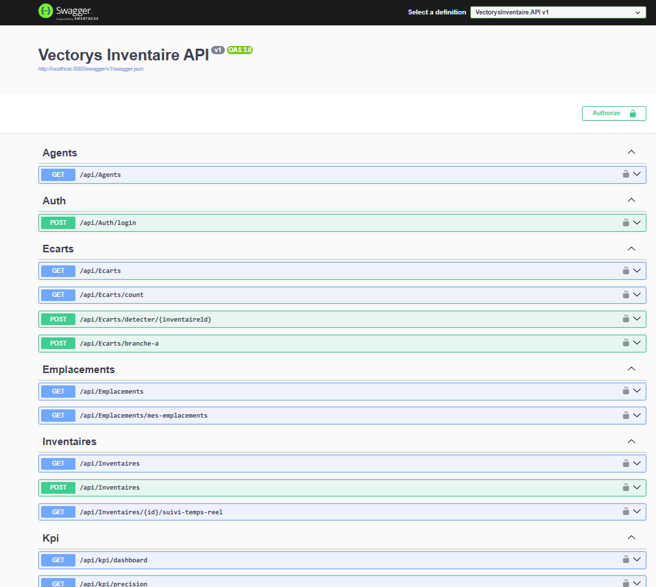
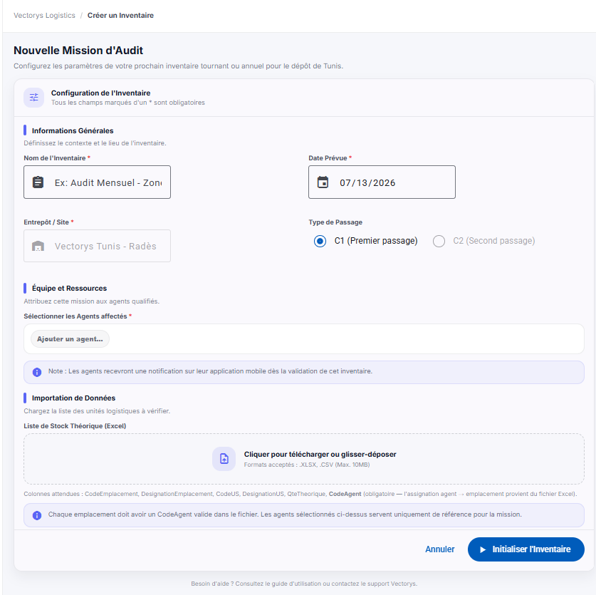
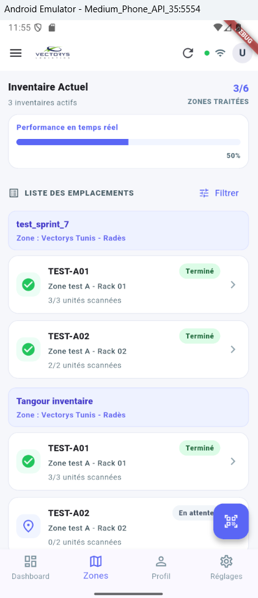
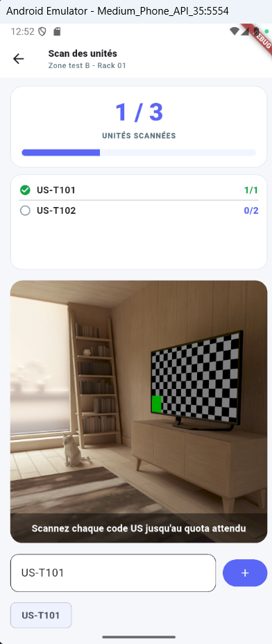
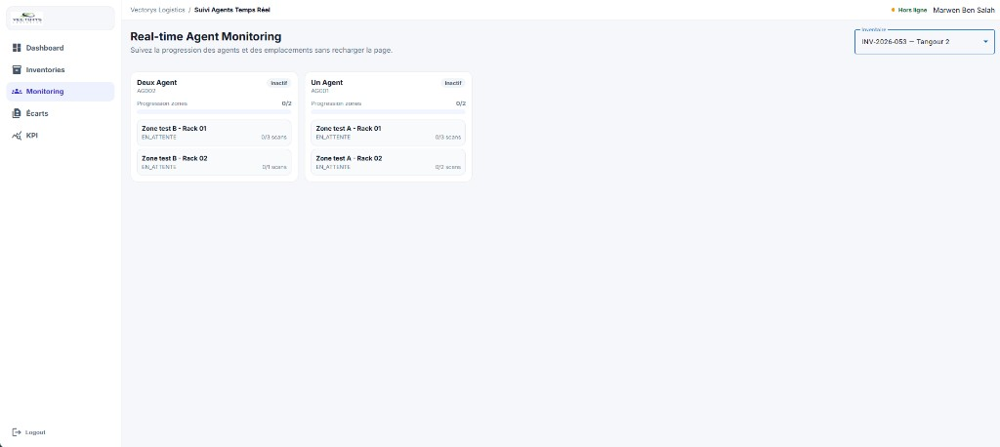
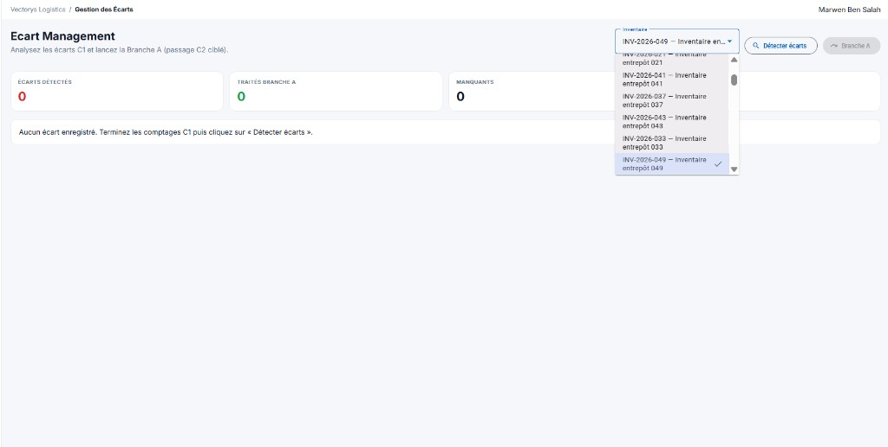
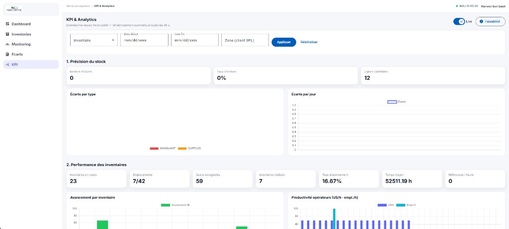

République Tunisienne
Ministère de l'Enseignement Supérieur et de la Recherche Scientifique
École Supérieure Privée d'Ingénierie et de Technologie — TEK-UP
Conception et développement d'une plateforme
d'inventaire logistique multi-canal
République Tunisienne
Ministère de l'Enseignement Supérieur et de la Recherche Scientifique
École Supérieure Privée d'Ingénierie et de Technologie — TEK-UP
Conception et développement d'une plateforme
d'inventaire logistique multi-canal
Chapitre 5 — Tests et validation
5.1 Stratégie et niveaux de test
5.2 Environnement et jeux de données
5.3 Tests d'API (Swagger et Postman)
5.4 Scénario bout-en-bout : import et comptage
5.5 Tests mobile, offline et supervision
5.6 Matrice de couverture des exigences
5.7 Tests non fonctionnels
5.8 Synthèse des résultats et limites
Conclusion du chapitre
Ce chapitre présente la démarche de vérification de Vectorys Inventaire. Après la réalisation technique (chapitre 4), il s'agit de démontrer que les fonctionnalités critiques — authentification, import Excel, comptage avec quotas, synchronisation hors ligne, détection d'écarts et consultation KPI — se comportent conformément aux exigences du chapitre 2. La stratégie privilégie des scénarios reproductibles, des jeux de données contrôlés et une validation multi-canal (API, web, mobile).
Dans un contexte logistique, une erreur de comptage ou d'assignation a un coût métier immédiat. Les tests ne se limitent donc pas à « l'API répond 200 » : ils vérifient les transitions de statut (EN_ATTENTE → EN_COURS → TERMINE), le respect des quotas US, l'isolation des emplacements par agent et la cohérence des données en base SQL Server.
La campagne de validation s'appuie principalement sur des tests d'intégration et bout-en-bout manuels, assistés par Swagger, Postman, SSMS et un guide opérationnel (scripts/GUIDE-TEST-IMPORT.txt). Ces approches sont complétées par la documentation OpenAPI et, côté Flutter, une base de tests unitaires destinée à être enrichie.
La pyramide de tests adoptée pour le projet est volontairement pragmatique : fort accent sur les scénarios métier traversant plusieurs couches, faute d'une suite unitaire exhaustive à ce stade du stage.
| Niveau | Objectif | Outils / méthodes |
|---|---|---|
| Unitaire | Isoler une règle (validation, calcul de quota) | xUnit / Flutter test (enrichissement progressif) |
| Intégration API | Vérifier endpoints, JWT, codes HTTP, payloads | Swagger, Postman, Serilog |
| Bout-en-bout (E2E) | Parcourir le cycle inventaire réel | Angular + Flutter + SQL Server + guide import |
| Non fonctionnel | Sécurité des rôles, volume d'import, offline | Tests manuels ciblés, observations terrain |
| Recette | Valider avec l'encadrant professionnel | Démonstration scénario C1 / écarts / KPI |
Chaque scénario formalise : préconditions, étapes, résultat attendu et critère de succès. Les anomalies détectées sont corrigées avant de basculer vers le sprint suivant (définition de « Done » Scrum).
| Élément | Configuration |
|---|---|
| API | http://localhost:5000 (profil Development, Swagger actif) |
| Base de données | SQL Server Express YOSRI\SQLEXPRESS, base VectorysDB |
| Portail web | http://localhost:4200 |
| Mobile | Émulateur Android et/ou appareil physique (URL API adaptée) |
| Comptes seed | superviseur@vectorys.local / agents AG001, AG002… |

Un fichier reproductible (scripts/test-import-stock.xlsx), généré par un petit outil .NET, structure un inventaire de démonstration :
| Emplacement | Agent | Contenu US (quantités) | Scans pour TERMINE |
|---|---|---|---|
| TEST-A01 | AG001 | US-T001 ×2 ; US-T002 ×1 | 3 |
| TEST-A02 | AG001 | US-T003 ×2 | 2 |
| TEST-B01 | AG002 | US-T101 ×1 ; US-T102 ×2 | 3 |
| TEST-B02 | AG002 | US-T201 ×1 | 1 |
Résultat d'import attendu : 4 emplacements, 6 lignes de stock théorique, répartition {"AG001": 2, "AG002": 2}. Ce jeu permet de tester à la fois l'assignation stricte et l'auto-terminaison.
Les tests d'intégration API valident le contrat HTTP indépendamment de l'interface graphique. La procédure type est la suivante.
| ID | Cas de test API | Attendu | Résultat |
|---|---|---|---|
| T-API-01 | Login superviseur valide | 200 + token JWT | OK |
| T-API-02 | Login agent code invalide | 401 | OK |
| T-API-03 | GET inventaires sans token | 401 | OK |
| T-API-04 | Agent appelle endpoint superviseur | 403 | OK |
| T-API-05 | Création inventaire + C1 auto | 201 + passage C1 | OK |
| T-API-06 | Import Excel conforme | emplacements + stocks créés | OK |
| T-API-07 | Import CodeAgent manquant / inconnu | rejet / message explicite | OK |
| T-API-08 | Scan jusqu'au quota | statut TERMINE | OK |
| T-API-09 | Scan au-delà du quota | erreur métier | OK |
| T-API-10 | Batch offline (doublons) | idempotence / compteurs sync | OK |
| T-API-11 | Détection écarts après C1 | MANQUANT / SURPLUS selon cas | OK |
| T-API-12 | Branche A | passage C2 ciblé + écarts traités | OK |
| T-API-13 | KPI dashboard | DTO agrégé cohérent | OK |
Le scénario nominal de recette reprend le guide d'import/scan. Il constitue le test E2E principal du projet.



| Critère | Mesure | Statut |
|---|---|---|
| Import complet | 4 emplacements / 6 stocks / 2+2 assignations | Validé |
| Isolation AG001 / AG002 | Aucun emplacement croisé visible | Validé |
| Auto-terminaison | TERMINE sans bouton « fin manuelle » | Validé |
| Quota strict | Message d'erreur sur sur-scan | Validé |
| Persistance | Cohérence SSMS (scans vs QteTheorique) | Validé |
Le test offline simule une coupure réseau pendant la boucle de scan :
| ID | Cas offline | Attendu | Résultat |
|---|---|---|---|
| T-OFF-01 | Scan sans réseau | Pas d'erreur bloquante ; file locale | OK |
| T-OFF-02 | Retour réseau | Sync réussie ; bannière à jour | OK |
| T-OFF-03 | Re-sync accidentelle | Pas de double comptage serveur | OK |
Côté web, la validation porte sur :



Le tableau suivant relie les familles d'exigences fonctionnelles (chapitre 2) aux scénarios de test exécutés.
| Exigences (famille) | Scénarios / tests | Couverture |
|---|---|---|
| RF-01 … RF-04 Authentification | T-API-01 à T-API-04 ; login web/mobile | Couvert |
| RF-05 … RF-09 Inventaires / passages | T-API-05 ; Fig. 5.5 | Couvert |
| RF-10 … RF-14 Import / assignation | T-API-06/07 ; guide Excel ; E2E §5.4 | Couvert |
| RF-15 … RF-20 Comptage terrain | T-API-08/09 ; Fig. 5.6–5.7 ; E2E | Couvert |
| Offline / sync | T-OFF-01 à T-OFF-03 ; T-API-10 | Couvert |
| RF-21 … RF-24 Écarts | T-API-11/12 ; Fig. 5.11 | Couvert (Branche A) |
| RF-25 … RF-27 KPI / temps réel | T-API-13 ; Fig. 5.10 / 5.12 | Couvert |
Cette matrice confirme que le périmètre prioritaire du backlog a fait l'objet d'une validation explicite. Les extensions (clôture inventaire formalisée, export Excel final, branche B globale) continuent d'être éprouvées lors des itérations de consolidation et du déploiement local.
| Critère (RNF) | Vérification réalisée | Observation |
|---|---|---|
| Sécurité / rôles | Accès refusés sans JWT ou hors policy | Policies SuperviseurOnly / AgentOnly effectives |
| Confidentialité tokens | TTL 8 h agent / 24 h superviseur | Conforme conception |
| Robustesse import | Fichier volumineux limité (50 Mo), validation colonnes | Rejets explicites |
| Disponibilité offline | Scans en file locale puis sync | Fonctionnel sur parcours testé |
| Temps réel | Notifications hub pendant scan | Suivi utilisable en démo |
| Maintenabilité API | Swagger + messages d'erreur middleware | Facilite le diagnostic |
Des tests de charge massifs (milliers d'emplacements simultanés) n'entrent pas dans le périmètre du stage ; en revanche, les index KPI (sprint 7) et le batch de sync préparatoire ont été conçus pour limiter les risques de saturation lors d'un inventaire réel.
Ce chapitre a formalisé la stratégie de test de Vectorys Inventaire : environnement contrôlé, jeux de données Excel reproductibles, batterie de cas API, scénario E2E import/comptage, validation offline et supervision KPI, matrice de couverture des RF et revue non fonctionnelle. Les résultats montrent que le cycle inventaire multi-canal est opérationnel pour une exploitation en conditions de démonstration et de déploiement local. Les perspectives d'évolution (automatisation accrue, finalisation des workflows de clôture/export, mise en production sur serveur d'entreprise) seront reprises dans la conclusion générale du rapport.